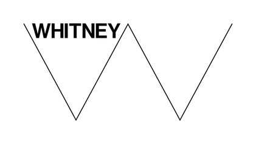

대표 로고대표 브랜드 마크
대표 로고대표 브랜드 마크미국 의회도서관 Library of Congress
미국 의회도서관(Library of Congress)은 워싱턴 D.C.에 있는 미국의 사실상의 국립 도서관이다. 미국 의회에 공식적으로 서비스를 제공하는 연구 도서관이며, 1800년에 설립되었다.
최종 업데이트
미국 의회도서관은 어떤 브랜드인가
미국 의회도서관은 미국 의회에 공식적으로 서비스를 제공하는 연구 도서관이다. 미국에서 가장 오래된 연방 문화 기관이며, 세계에서 가장 큰 도서관 중 하나이다.
주제, 형식, 국가 경계에 제한되지 않고 세계 각지와 470개 이상의 언어로 된 연구 자료를 포함한다. 주요 임무는 의회 조사 서비스를 통해 수행되는 의회 의원들의 질의에 대한 연구이며, 미국 저작권 사무소도 운영하고 감독한다.
연구를 위해 일반에게 개방되어 있지만, 고위 공무원들과 도서관 직원들만이 도서와 자료를 대출할 수 있다. 미국 의회조사국, 의회예산처, 미국 연방회계감사원, 기술평가원과 함께 미국 의회의 4대 입법보조기관 중 하나이다.
미국 의회도서관은 어떻게 시작되고 성장했나
버지니아의 제임스 매디슨이 1783년에 의회 도서관을 만들자는 아이디어를 처음 제안한 것으로 인정받는다. 1800년 4월 24일 존 애덤스 대통령이 정부 소재지를 필라델피아에서 워싱턴으로 옮기는 법안에 서명하면서 미국 의회도서관이 설립되었다.
책은 런던에서 주문되었고, 수집품은 740권의 책과 3장의 지도로 구성되었다. 1814년 영국군이 도서관을 불태웠고, 도서관은 토머스 제퍼슨의 개인 소장품 6,487권을 구입하여 1815년에 소장품을 복원하기 시작했다.
1851년 12월 24일에는 도서관 역사상 가장 큰 화재가 일어났고, 1888년과 1894년 사이에 캐피톨 길 건너편에 자체 도서관 건물이 건설되었다.
미국 의회도서관의 브랜드 아이덴티티는 무엇인가
미국 의회에 공식적으로 서비스를 제공하는 연구 도서관이자 미국의 사실상의 국립 도서관이며, 미국에서 가장 오래된 연방 문화 기관이다.
미국 의회도서관의 대표 제품과 서비스는 무엇인가
소장품은 3천만권의 대장에 정리된 도서와 470개 언어로 된 인쇄물, 5천 8백만개의 문서로 이루어져 있다. 구텐베르크 성서를 포함한 고서는 북아메리카에서 최고이다.
백만권의 미 정부 출판물, 백만편의 세계 신문, 50만개의 마이크로필름, 6천권의 만화책, 세계 최대의 법학책을 소장하고 있다. 4백 80만점의 지도, 악보와 2백 7십만의 음반도 있으며, 베츠 스트라디바리우스와 카사베티 스트라디바리우스도 소장한다.
미국 저작권 사무소의 운영과 감독도 도서관의 업무에 포함된다.
미국 의회도서관은 지금 어떤 상태인가
도서관은 워싱턴 D.C.의 캐피톨 힐에 있는 세 개의 건물에 있으며, 버지니아주 컬퍼에 보존 센터를 유지하고 있다. 도서관의 기능은 의회 사서가 감독하고, 건물은 국회의사당 건축가가 관리한다.
James H. Billington의 퇴임 이후인 2015년 10월 1일부터 David S.
Mao가 총 관리자(Acting Librarian of Congress)로 직무를 시작했다.
미국 의회도서관 로고는 어떻게 변해왔나
대표 로고대표 브랜드 마크자주 묻는 질문
미국 의회도서관는 어느 나라 브랜드인가요?
미국 의회도서관는 미국의 미디어·엔터테인먼트 브랜드입니다.
미국 의회도서관는 언제 설립되었나요?
미국 의회도서관는 1800년 설립되었습니다.
미국 의회도서관의 브랜드 아이덴티티는 무엇인가요?
미국 의회에 공식적으로 서비스를 제공하는 연구 도서관이자 미국의 사실상의 국립 도서관이며, 미국에서 가장 오래된 연방 문화 기관이다.
미국 의회도서관의 대표 제품은 무엇인가요?
소장품은 3천만권의 대장에 정리된 도서와 470개 언어로 된 인쇄물, 5천 8백만개의 문서로 이루어져 있다.
미국 의회도서관는 현재 어떤 상태인가요?
도서관은 워싱턴 D.C.의 캐피톨 힐에 있는 세 개의 건물에 있으며, 버지니아주 컬퍼에 보존 센터를 유지하고 있다.
미국 의회도서관의 본사는 어디에 있나요?
미국 의회도서관의 본사는 워싱턴 D.C.에 있습니다(위키데이터 기준).
미국 의회도서관의 공식 웹사이트는 어디인가요?
미국 의회도서관의 공식 웹사이트는 https://loc.gov/ 입니다.
출처와 검증
미국 의회도서관 관련 참고: 공식 웹사이트 · 위키데이터 Q131454 · 한국어 위키백과 · 영어 위키백과. 브랜드명은 한글과 원어를 함께 표기하되 데이터에 없는 표기는 만들지 않습니다. 기원 국가·설립연도는 검수된 정의문에서 확인된 값을 우선하고, 없을 때만 공식 웹사이트 URL이 일치하는 위키데이터 개체의 값을 씁니다. 위키데이터 값은 2026-10-18 기준입니다.
함께 읽을 브랜드
 필라델피아 미술관Philadelphia Art Museum미디어·엔터테인먼트
필라델피아 미술관Philadelphia Art Museum미디어·엔터테인먼트
휘트니 미술관Whitney Museum of American Art미디어·엔터테인먼트 몬트리올 미술관Musée des beaux-arts de Montréal미디어·엔터테인먼트
몬트리올 미술관Musée des beaux-arts de Montréal미디어·엔터테인먼트 월트 디즈니 컴퍼니The Walt Disney Company미디어·엔터테인먼트
월트 디즈니 컴퍼니The Walt Disney Company미디어·엔터테인먼트 넷플릭스Netflix미디어·엔터테인먼트
넷플릭스Netflix미디어·엔터테인먼트 워너 브라더스Warner Bros. Entertainment미디어·엔터테인먼트
워너 브라더스Warner Bros. Entertainment미디어·엔터테인먼트 유니버설 픽처스Universal Pictures미디어·엔터테인먼트
유니버설 픽처스Universal Pictures미디어·엔터테인먼트 대영박물관British Museum미디어·엔터테인먼트
대영박물관British Museum미디어·엔터테인먼트